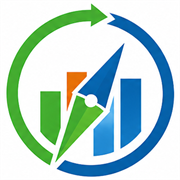
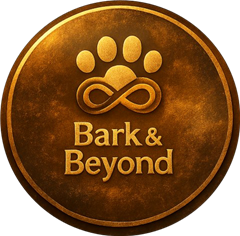

As a certified SAP Activate practitioner (Associate certification ongoing) and SAP C-ALM administrator, I operate as a Finance Functional Consultant embedded within SAP implementation programmes — covering the full project lifecycle from Discover through Deploy. I translate CFO-level requirements into functional specifications, validate blueprints against S/4HANA best practices, resolve Fit-to-Standard gaps, and ensure Finance BPOs and key users are fully ready at go-live.


Founder and product lead of VSME PRO / VSME Navigator, a B2B SaaS that operationalises the EFRAG VSME standard for European SMEs. The platform turns scattered ESG data into a guided, audit-ready VSME workflow — with industry-specific demo data, gap analysis, AI guidance in business language and a CRM-based advisory follow-up. Designed to support the shift from reactive, ad-hoc handling of ESG questionnaires to a structured, anticipatory engagement with banks, customers, investors and procurement teams.